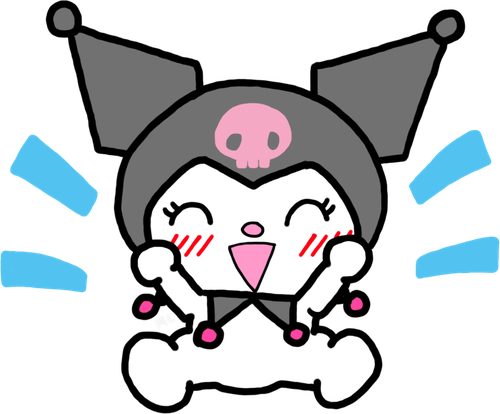
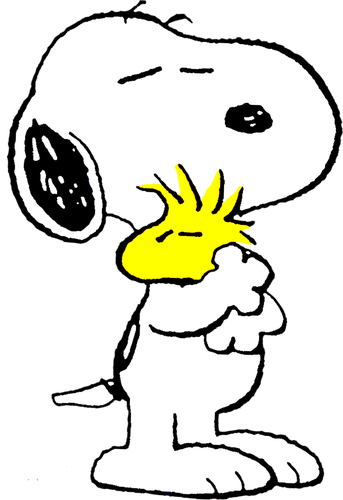

23 octubre 2026Pasito a patito
📍 Tlaxcala
- Comimos
- Unos tacos que ella me recomendó, un Fuze Tea y un Jumex de mango (no había Boing)
- Lugares
- Su facultad, la biblioteca, la plaza, el Palacio de Cultura y el centro
- Ella llevaba
- Sudadera negra, blusa blanca, delineado con brillitos y su trencita de siempre
"Va a ser muy difícil, muy complejo, pero puede funcionar." — Daniel
 Lo que pasó
Lo que pasó
El día empezó raro. La noche pasada peleamos bastante, fue algo raro; fui con miedo de lo que pudiera pasar. Llegué temprano, me metí a tu facultad, entré y te marqué para saber dónde estabas. Me dijiste que aún no llegabas, que te esperara en la cafetería. Compré una paletita y esperé pacientemente hasta que te vi, tan bonita, con tu sudadera negra, tu clásico delineado con brillitos, tu trencita de siempre y la blusa blanca que llevabas abajo. Muy hermosa.
Entramos a la biblioteca, donde nadie nos viera. Hablamos, nos acercamos un poquito y te marcaron para que fueras a exponer. Fuiste, regresaste y salimos de tu U. Fuimos a Walmart a hacer unas cosas y nos sentamos en las mesitas de la plaza. Te abracé, no te alejaste, fue muy lindo. Empezamos a jugar con que me quitabas unos vellitos del brazo mientras me veías a los ojos; fue muy lindo y subió un poco la tensión. Nos besamos, y después de la pelea de anoche se sintió como que seguía habiendo esperanza.
Hablamos un poco más para después ir a comer a unos tacos que me recomendaste. Fuimos, comimos, compré un Fuze Tea y un Jumex de mango para ti porque no había Boing. Terminamos de comer y fuimos camino al centro. Nos detuvimos en el Palacio de Cultura otra vez, hablamos y quedamos en hacer unas actividades. Fuimos al centro a realizarlas, y en el camino te dije que esto iba a ser muy difícil, que iba a ser muy complejo, pero que podía funcionar. Hablamos cositas más, cositas menos, y dimos unas vueltas en el centro de una manera tan natural.
Fuimos de regreso a tu casa, me regresaste unas cosas, mas no todas, y hablé con tu mamá. Mientras regresaba a mi casa nos escribimos un poco; fue muy lindo. Realmente sentí que podemos arreglar esto, y que esto quede como evidencia de que voy a desvivirme y hacer todo, y hasta más, con tal de poder arreglarlo y que seamos felices juntos.
Te amo, Linn. Vamos pasito a patito. Te amo 🖤
